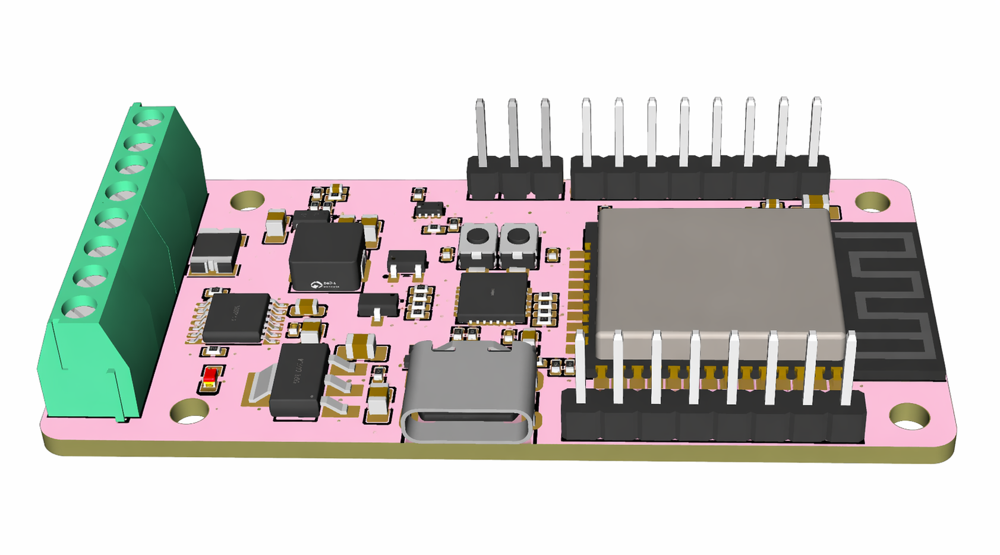
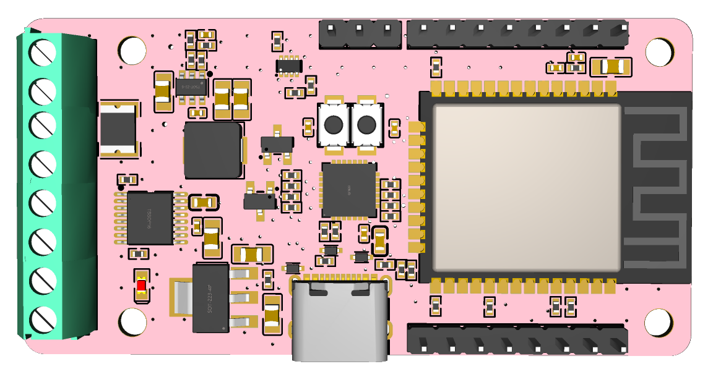
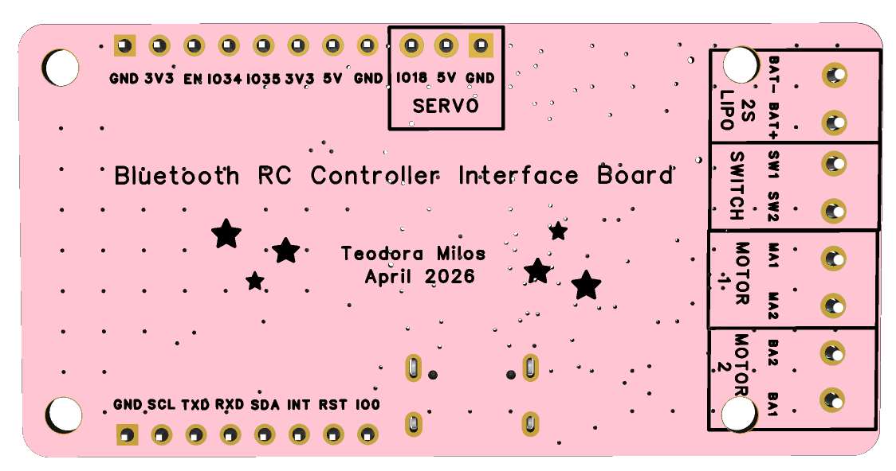
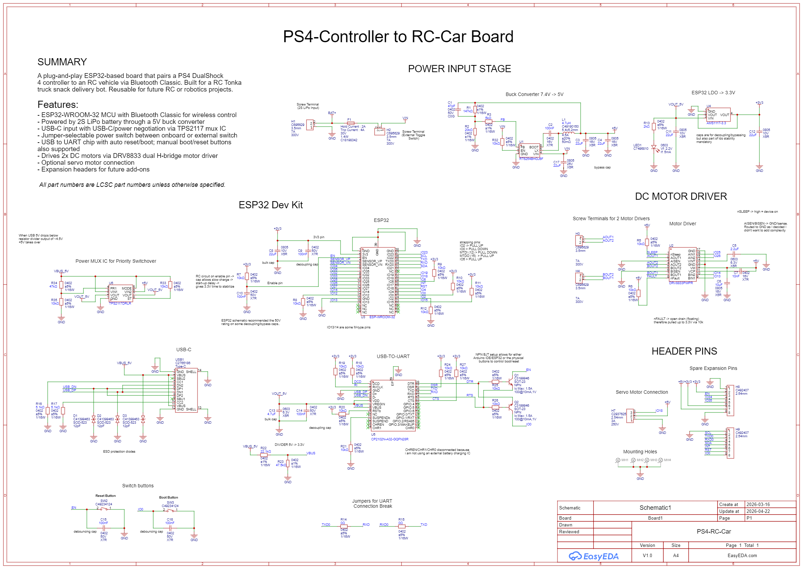

Bluetooth RC Car Interface PCB
Overview
A compact ESP32-based board that receives PS4/PS5 controller input over Bluetooth Classic and drives two DC motors plus an optional servo for an RC vehicle. Powered by a 2S LiPo (7.4 V nominal) in the field, with USB-C as an alternate bench supply. Designed to fit a 3D-printed Tonka-style chassis.
This was a self-directed hardware project built to deepen my PCB and embedded systems design skills end-to-end: from requirements and component selection through schematic capture, layout, DRC, Gerber export, and ordering from JLCPCB.

PCB angled view (3D render)
PCB Design
The board is a 4-layer FR4 design with 1 oz copper. Layer 1 carries signals and components on the top side, layer 2 is a solid GND plane, layer 3 is a power plane, and layer 4 carries signals and components on the bottom side. I followed JLCPCB design rules from the very start of layout rather than as a final check, which kept the routing clean and avoided late-stage DRC surprises.
Power traces were sized using an IPC-2221 trace width calculator, targeting both adequate current capacity and an acceptable temperature rise under load. The final DRC came back with 0 errors.

Front view

Back view

Full schematic
Component Selection
ESP-WROOM-32
Bluetooth Classic support, dual core, Arduino IDE compatible, well-documented, available on LCSC, and cheap. Chosen over the WROVER (larger footprint), SOLO-1 (single core), and PICO-F4 (smaller but harder to route).
RT6254 Buck Converter (7.4 V → 5 V)
Synchronous buck, met the input voltage range, 5 V at 4 A output, available on LCSC at a good price. Chosen over the LM2596 for its synchronous switching and better efficiency. Trade-offs: small footprint and tighter PCB routing required around the inductor.
AMS1117 LDO (5 V → 3.3 V)
Standard part from the ESP32 dev kit reference design. Trade-offs: 1.4 V dropout, runs warm under load, larger package than alternatives.
TPS2117 Power Mux
Solves the design challenge of having both USB-C 5 V and the buck's 5 V rail present simultaneously. Routes USB power to the ESP32 and USB-to-UART chip when plugged in, and falls back to the buck when unplugged. Motors always run from the buck rail and are unaffected by mux state.
USB-C Connector
Reversible, industry standard, up to 3 A at 5 V. Trade-offs: requires CC pull-down resistors, more pins to route, ESD protection more critical, and slightly more expensive than micro-USB.
CP2102 USB-to-UART
Enables direct USB programming with an auto-reset/auto-boot circuit (DTR/RTS toggling EN and IO0), so no manual button presses are needed on each upload. Trade-off: QFN-28 package requires hot air or reflow for assembly.
DRV8833 Dual H-Bridge Motor Driver
Within the motor supply voltage range, 1.5 A per channel, fault reporting, sleep mode, available on LCSC, within budget. Chosen over the L298N (large, approximately 2 V H-bridge voltage drop, runs hot) and the MX1508 / L9110S (no fault reporting or sleep mode, less reputable vendors).
2S LiPo Battery (7.4 V nominal)
Rechargeable, compact, high C-rating for motor inrush and stall current, easy to connect. 1S (3.7 V) is too low for the 5 V rail headroom; 3S (11.1 V) is higher than needed. Chosen over alkaline AAs (non-rechargeable, high internal resistance) and NiMH (heavier, more cells required).
Manufacturing & Next Steps
Gerbers exported and verified, board ordered from JLCPCB.
Bring-Up Plan
- Reflow assembly of the populated board
- Bench bring-up and power rail validation
- Signal integrity check with an oscilloscope
- Thermal characterisation of the buck, LDO, and motor driver under load using a thermal camera
- Firmware bring-up over USB/UART
Future Enhancements
- Servo steering via the existing wired output
- IMU integration over the expansion header